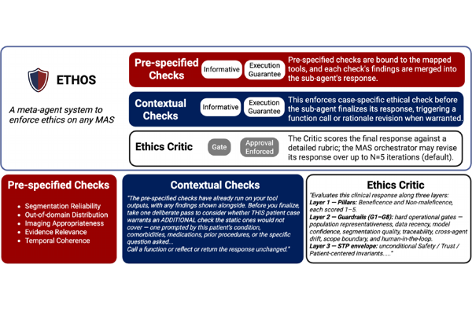
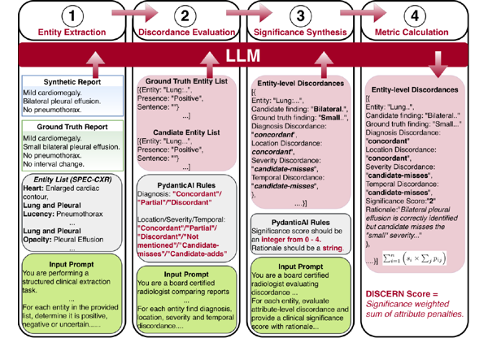
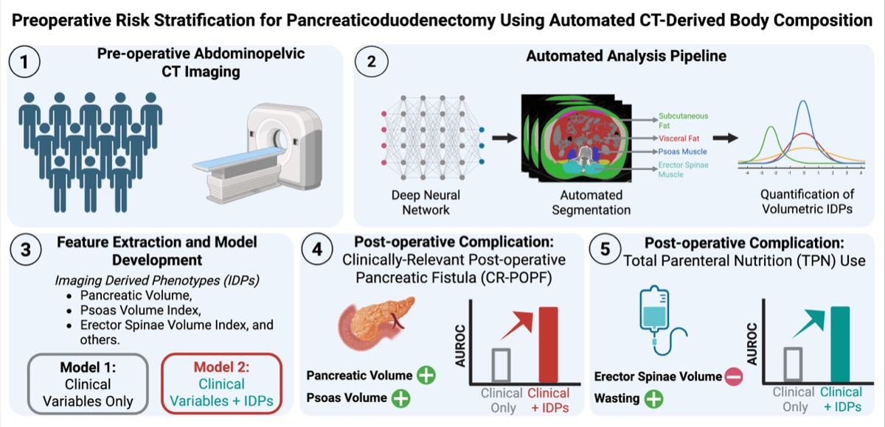
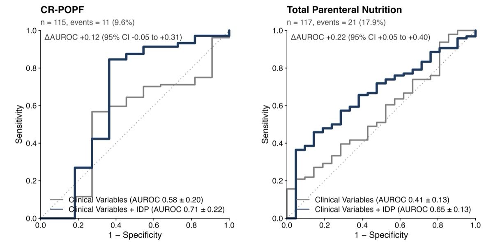
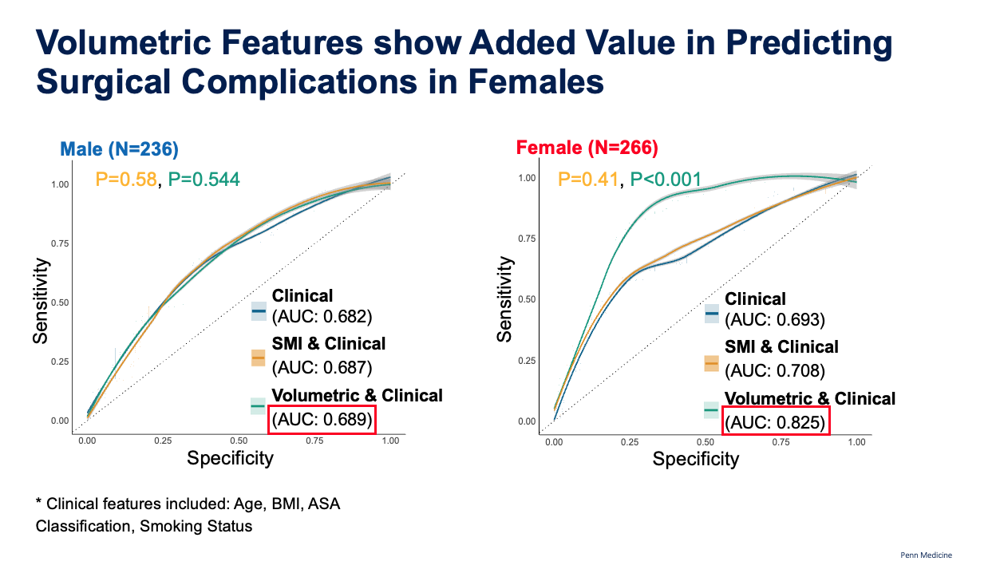
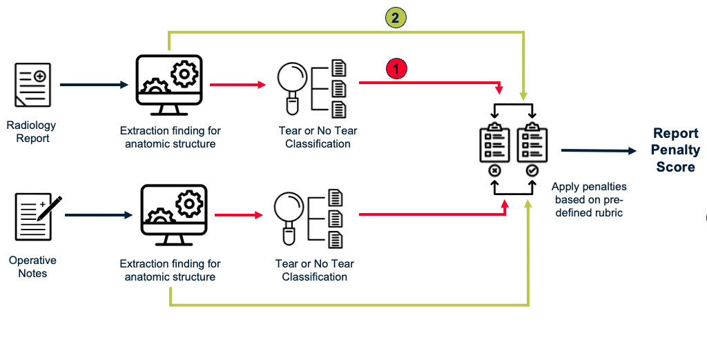
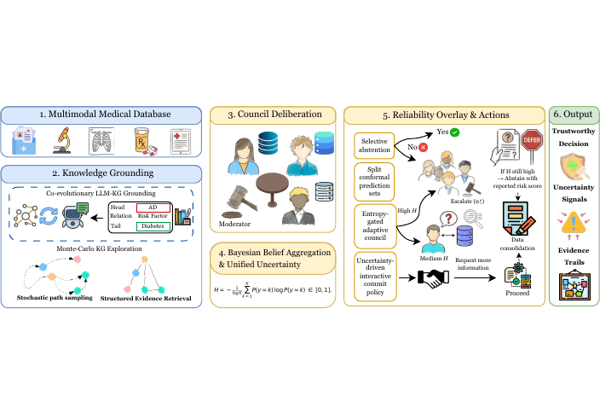
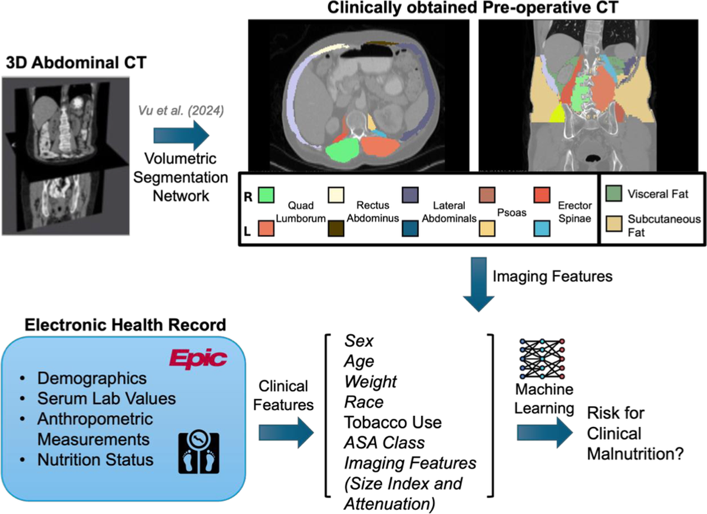
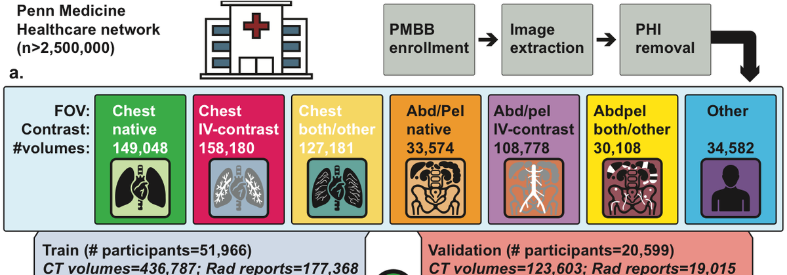
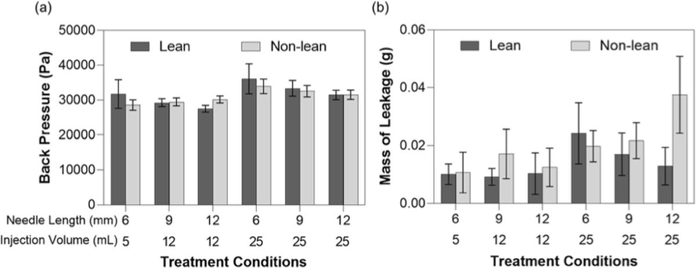

PhD Student in Bioengineering · University of Pennsylvania
I build multimodal AI for clinical decision support — systems that read the full breadth of patient data, and that clinicians can inspect, verify, and trust. I am advised by Prof. Walter R. T. Witschey and Prof. Victoria M. Gershuni.
My family hails from a remote village in Nepal where seeing a nurse can mean a two-hour walk. Democratizing healthcare is my life’s mission, and explainable AI is how I work toward it.
Before my PhD I spent four years as a data scientist at Eli Lilly, co-founded a surgical robotics company as CTO, built microfluidic diagnostics at Achira Labs, and developed computer-vision systems at Wipro. I hold a B.Tech–M.Tech in Bioengineering from IIT (BHU) Varanasi and review for Journal of Imaging Informatics in Medicine, Korean Journal of Radiology, Nature Communications (student reviewer), ACM-BCB, and SIIM-CAIMI.
† equal contribution · * under review. Filter by topic:
No publications match this filter.



Automated CT-Based Volumetric Body Composition Analysis Predicts Post-Operative Complications Following Pancreaticoduodenectomy
CLINICCAI (MICCAI), 2025 · oral presentation · manuscript under review *

Muscle Quality on Preoperative Imaging is Associated with Postoperative Pancreatic Fistula Risk
American College of Surgeons Annual Meeting, 2025 · oral presentation

Volumetric Body Composition Analysis on Preoperative CT Scans Improves Risk Prediction in Colorectal Surgery Patients
RSNA Annual Meeting, 2025 · poster

Enhancing Diagnostic Concordance and Quality Assurance Through Automated MRI and Arthroscopy Report Comparison Using Large Language Models
RSNA Annual Meeting, 2025 · poster
Osteoconductive Amine-Functionalized Graphene–Poly(methyl methacrylate) Bone Cement Composite with Controlled Exothermic Polymerization
Bioconjugate Chemistry, 28(9), pp. 2254–2265, 2017

CURA: Calibrated Uncertainty with Retrieval and Agents for Trustworthy Multimodal Medical Decision Support
MICCAI, 2026 — accepted
The Association Between Adiposity and Cardiac Function in Patients with Early Breast Cancer Receiving Cardiotoxic Therapies
Breast Cancer Research, 2026 · also ASCO 2026, abstract 12021 (J. Clin. Oncol. 44.16_suppl)
Aortic Geometric Atlas: Centile-Based Reference Charts and Pathological Signatures Across the Adult Lifespan
medRxiv, 2026 *
Automated CT-Based Body Composition Analysis and Utility in Risk Stratification for Adult Spinal Deformity Correction
Manuscript under review, 2026 *

Development of an Automated, Imaging-Based Preoperative Screening Model for Early Identification of Malnutrition in an Abdominal Surgery Cohort
medRxiv, 2026 *

Generalizable CT Vision-Language Modeling for Population Health and Disease Risk
medRxiv, 2026 *
Automated Pipeline for Analysis of Paraesophageal Hernias
Digestive Disease Week, 2026, abstract 1280 (Gastrointest. Endosc. 103.5) · also ACTS 2026, abstract 78 (J. Clin. Transl. Sci.)
Enhancing Attending-to-Resident Feedback by Using LLMs to “Understand” Clinical Significance: A Proof of Study
SIIM Annual Meeting, 2026 · poster
Adapting Vision-Language Models for 3D CT/MRI Understanding on PMBB via Slice Selection and Explanation Analysis
ICCV Workshops, 2025, pp. 2273–2282
Body Composition Analysis of Weight Loss Induced by GLP-1 Receptor Agonists
Korean College of Radiologists Annual Meeting, 2025 · oral presentation
Trends in Muscle and Fat Metrics and Their Association with Outcomes Following CAR T-Cell Therapy in Older Adults with Non-Hodgkin Lymphoma
ASH Annual Meeting, 2025, abstract 3553 (Blood 146, suppl. 1)

Clinical Investigation of Large Volume Subcutaneous Delivery up to 25 mL for Lean and Non-Lean Subjects
Pharmaceutical Research, 41(4), pp. 751–763, 2024
Computational Modeling and Simulation of the Cerebrospinal Flow and Drug Delivery
Alzheimer’s & Dementia, 20, e094612, 2024
A Point-of-Care Immunoassay Platform for Thyroid Function Based on Hydrogel Sensors Embedded Inside a Microfluidic Device
MicroTAS, pp. 102–103, 2019